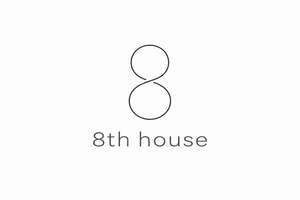

Trade Mark Journal No.2026/009 27 February 2026
UK00004337147 7 February 2026 (5,35,44)

- Class 5
- Pharmaceuticals; Homeopathic pharmaceuticals; Injectable pharmaceuticals; Pharmaceutical drugs; Anti-diabetic pharmaceuticals; Antidiabetic pharmaceuticals; Antibacterial pharmaceuticals; Cardiovascular pharmaceuticals; Ocular pharmaceuticals; Pharmaceutical preparations and substances for use in oncology; Pharmaceutical preparations and substances for use in urology; Dermatological pharmaceutical substances; Chemicals for pharmaceutical use; Pharmaceutical preparations and substances for use in gynecology; Astringents [pharmaceutical]; Pharmaceutical creams; Gelatin capsules for pharmaceuticals; Pharmaceutical preparations and substances; Dermatological pharmaceutical products; Pharmaceuticals for the treatment of erectile dysfunction; Lotions for pharmaceutical purposes; Pharmaceutical implants; Pharmaceuticals and natural remedies; Pharmaceutical preparations for use in oncology; Pharmaceutical preparations for use in urology; Pharmaceutical products for the treatment of cancer; Ointments for pharmaceutical purposes; Empty capsules for pharmaceuticals; Pharmaceutical sweets; Analgesics for pharmaceutical use; Pharmaceutical preparations and substances for use in the field of anesthesia; Cytostatics for pharmaceutical purposes; Antibacterials for pharmaceutical use; Pharmaceutical products for the treatment of depression; Pharmaceutical preparations and substances for the treatment of cancer; Pharmaceutical products for the treatment of bone diseases; Food esters for pharmaceutical purposes; Iodine for pharmaceutical purposes; Implantable medicines; Pharmaceutical preparations for inhalers; Pharmaceutical preparations for use in hematology; Pharmaceutical preparations and substances for the treatment of gastro-intestinal diseases; Pharmaceutical preparations for animals; Elixirs [pharmaceutical preparations]; Pharmaceutical preparations; Pharmaceutical products and preparations for chloasma; Alkaloids used for pharmaceutical purposes; Phosphates for pharmaceutical purposes; Sulphonamides [medicines]; Sulphonamides as medicines; Iodides for pharmaceutical purposes; Pharmaceutical antiallergic preparations and substances; Sandalwood oil for medical, pharmaceutical and veterinary purposes; Capsules made of dendrimer-based polymers, for pharmaceuticals; Synthetic peptides for pharmaceutical purposes; Pharmaceutical preparations for use in dermatology; Pharmaceutical products for ophthalmological use; Alginate tablets for pharmaceutical purposes; Pharmaceutical products for the treatment of infectious diseases; Alginates for pharmaceutical purposes; Pharmaceutical products for treating respiratory diseases; Anti-epileptic pharmaceutical preparations; Pharmaceutical solutions used in dialysis; Pharmaceutical preparations and substances for the prevention of cancer; Pharmaceutical preparations for use in chemotherapy; Cellulose for pharmaceutical purposes; Sulfonamides [medicines]; Pharmaceutical compositions; Alcohol for pharmaceutical purposes; Tissues impregnated with pharmaceutical lotions; Lotions (Tissues impregnated with pharmaceutical -); Pharmaceutical products for the treatment of viral diseases; Bromine for pharmaceutical purposes; Pharmaceutical preparations for use in ophthalmology; Capsules for pharmaceutical purposes; Syrups for pharmaceutical purposes; Filled syringes for medical purposes [containing pharmaceuticals]; Pharmaceutical preparations for veterinary use; Pharmaceutical preparations for treating chemical imbalances; Injectable pharmaceuticals for treatment of anaphylactic reactions; Pharmaceutical skin lotions; Ethers for pharmaceutical purposes; Parenteral anti-epileptic pharmaceutical preparations.
- Class 35
- Business consultancy services; Business marketing services.
- Class 44
- Medical nursing; Nursing, medical; Medical and healthcare clinics; Clinics (Medical -); Medical clinics; Medical counseling; Medical and healthcare services; Medical services; Medical examination; Medical examinations; Medical assistance; Health clinic services [medical]; Medical counselling; Medical nursing services; Nursing services (Medical -); Medical clinic services; Clinic (Medical -) services; Clinic services (Medical -); Medical diagnostic services; Medical consultations; Medical treatment services; Medical information; Medical consultation; Medical testing; Medical care services; Medical screening; Remote monitoring of medical data for medical diagnosis and treatment; Medical imaging services; Health resort services [medical]; Rental of medical and health care equipment; Medical services in the field of oncology; Medical assistance consultancy provided by doctors and other specialized medical personnel; Medical services in the field of nephrology; Medical counseling services; Medical health assessment services; Provision of medical treatment; Health farm services [medical]; Medical advice in the field of pregnancy; Arranging of medical treatment; Medical examination of individuals; Medical care of feet; Providing medical support in the monitoring of patients receiving medical treatments; Medical evaluation services.
Nicholas Blair Rudlin